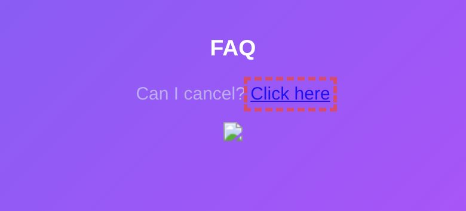

The 17-pixel link
Anything people tap needs a target of at least 44 × 44 px.

The number
- Before
- 67 × 17 pxhit area of the only FAQ link
- After
- 166 × 44 pxhit area after the fix
Why it happened. An inline text link inherits the line height of 13 px text. Its tappable box is only as tall as the letters.
The fix
.faq a { display: inline-flex; align-items: center;
min-height: 44px; }
/* and give it words that say where it goes */Check your own page
In DevTools, hover the link and read its box size, or run el.getBoundingClientRect(). WCAG 2.2 (2.5.8) sets 24 × 24 px as the AA minimum; Apple asks for 44 pt and Google for 48 dp.
Where these numbers come from. One pricing page an AI tool built from a single prompt, measured in Chromium at 1440 × 900 and 390 × 844 on 24 November 2026, before and after fixing exactly what the checks reported (38 → 66 of 66). Both pages are public.
Before pageAfter pageGuide: Touch target size: 24 px, 44 pt and 48 dp explained